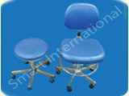
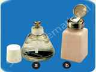
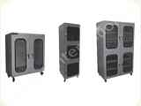
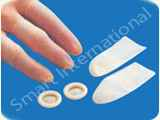
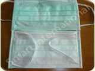
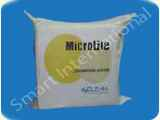
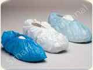
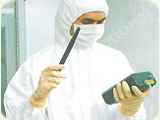

Cleanroom Disposable Latex Gloves
• Class 10 and Class 100 compatible • Alcohol resistant, Anti-bacterial and Stain-proof • Adjustable seat height • Ideal for Medical and Cleanroom environment |
 | ||
Cleanroom Disposable Latex Gloves :
• Made from pure latex of highest quality compounded in-house from formulation and process consistency • Offer superior resistance to dilute acids and alkalis, abrasive force and tearing • Provide optimal tactile sensitivity, long-term comfort and dexterity • Show significantly low extractable level • Applicable in Class 100 or better clean rooms where critical applications are not carried out • Ideal for disk-drive and related industries (HGA, HAS etc) |
|||
• Prevent spills, dripping and escaping fumes that will indirectly endanger the operations • To have a better working environment from toxic fumes and solvent vapour like alcohol, acetone, alkalis etc • Easy to use by tapping the dispenser • Contamination free • Glass material is used so that contents are known at a glance • One way valve prevents the contents to flow back into the main ‘reservoir’ • Anti Static Dispenser with Surface Resistivity 109 – 1011 Ω/ sq is also available |
 | ||
• Cabinets provided without any humidity reduction system • Dissipative ESD coating, mild steel frame • Glass window • 3 dimensions available • Additional shelves in option |
 | ||
• Designed to provide sensitive touch for work in electronics and other fields • A proprietary ‘washed’ process leaves no free radical reactive sites and low NVR • Tapered design eliminates air space at tip • Thinner ring-roll, unroll and cut from reduces finger comfort and fatigue • Packed in clean environment |
 | ||
• Made from 2 or 3 layers of spun bonded non-woven, thermally sealed waffle pattern polypropylene microfibers • Provide excellent filtration and absorption • Hypoallergenic that prevents irritation and allergy problems to sensitive skins • A nose piece is embedded on the upper side of the double or three-ply face mask to ensure a closer contact of the mask to the nose |
 | ||
Polyester Wipes & Micro Denier :
• Knitted light-weight wipers made from 100% polyester • Economical choice between non-woven and high micro-fibre wipes • Durable • Soft and non-abrasive • Excellent water and oil absorption |
 | ||
• Cabinets provided without any humidity reduction system • Dissipative ESD coating, mild steel frame • Glass window • 3 dimensions available • Additional shelves in option |
 | ||
Sticky Mats Disposable Sticky Mats :
• A stack of polyethylene film sheets with a specially treated pressure sensitive adhesives on one side • Remove contamination on contact • Peel to expose clean surface (eliminating cleaning and washing) • Use with or without frame • Slip-proof • Non-contaminating • Will not be damaged by footwear or wheels • Full adhesive bottom holds floor securely yet easy to remove and leaves no residue • Full size for every sheet – no sloping sides to reduce overall coverage and creates crevasses for catching contamination • Numbered corner tabs for easy removal of used sheet |
|||
• Made to protect workers from hazardous (dry and wet) materials • Tyvek material is made from high density polyethylene fibers • Combines some of the physical properties of paper, film and cloth • Provides no particles and is silicone-free |
 |
||